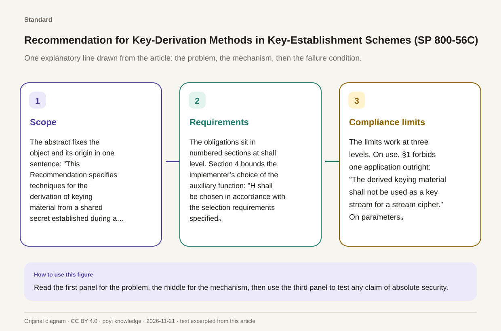
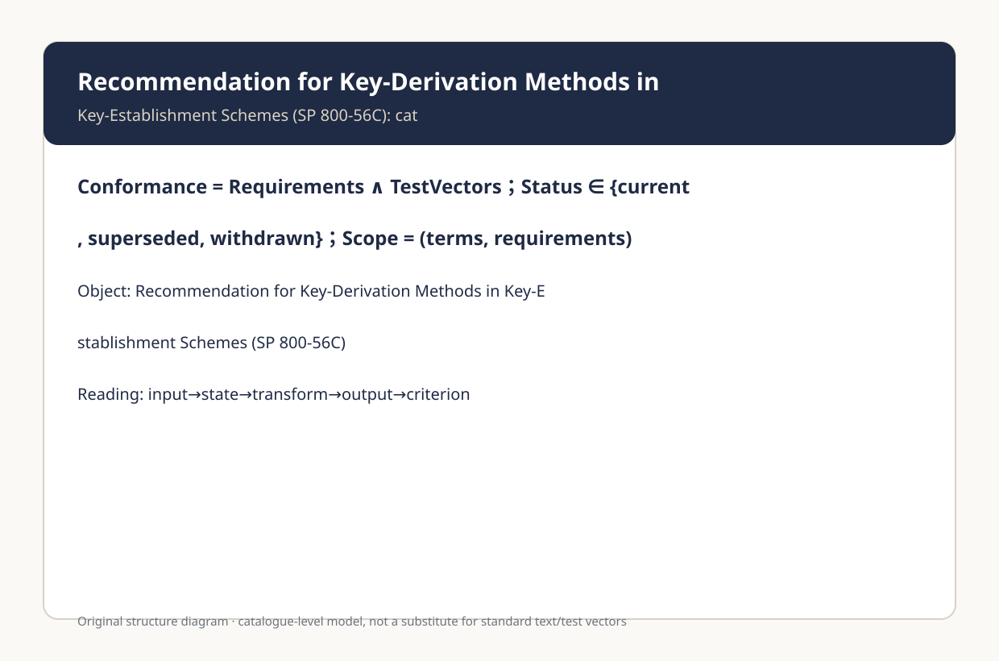

Principles
Standard: Recommendation for Key-Derivation Methods in Key-Establishment Schemes (SP 800-56C Rev. 1) (密钥建立方案中的密钥派生方法（SP 800-56C Rev. The abstract fixes the object and its origin in one sentence: "This Recommendation specifies techniques for the derivation of keying material from a shared secret established during a key-establishment scheme defined in NIST Special Publications 800-56A or 800-56B." Section 2 states that two categories are given: "This Recommendation specifies two categories of key-derivation methods that can be employed, as required, as part of a key-establishment scheme specified in [SP 800-56A] or [SP 800-56B]." The input is an agreed shared secret, not a password and not an already-held key; the methods themselves come in one-step and two-step categories.

Why it matters
Section 1 names the gap: running a public-key scheme yields a shared secret, and only then "a key-derivation method may be required to obtain secret cryptographic keying material." Section 2 explains why the two-step category is split at all, the first step reducing the agreed secret to a single key: "Randomness extraction, to obtain a single cryptographic key-derivation key from a shared secret generated during the execution of a key-establishment scheme". What key establishment produces is not shaped to be a key, so derivation is not optional.
Applications
The obligations sit in numbered sections at shall level. Section 4 bounds the implementer’s choice of the auxiliary function: "H shall be chosen in accordance with the selection requirements specified in Section 7." Section 7 expands that into hard selection rules: "Whenever a hash function is employed (including as the primitive used by HMAC), an approved hash function shall be used." Section 1 bounds how the result is computed and used: "The keying material derived using these methods shall be computed in its entirety before outputting any portion of it". The subject of all three is whoever implements and configures the scheme: pick H under §7, compute the whole block before releasing any of it, then use it only as secret keying material.

Limits & attacks
The limits work at three levels. On use, §1 forbids one application outright: "The derived keying material shall not be used as a key stream for a stream cipher." On parameters, §8.2 concedes that the most sensitive input may be non-random: "This Recommendation does not require the use of a randomly selected salt value." and §8.3 excludes one combination from the two-step method: "At this time, KMAC has not been specified for use in the implementation of a two-step key derivation procedure." On testability, the conformance paragraph states that some requirements "may be out-of-scope for CAVP or CMVP validation testing, and thus are the responsibility of entities using, implementing, installing, or configuring applications that incorporate this Recommendation."
History
The version facts come from this copy itself. The title block reads "NIST Special Publication 800-56C Revision 1" and "Recommendation for Key-Derivation Methods in Key-Establishment Schemes", with the author line "Elaine Barker Lily Chen Rich Davis"; the citation line gives "Natl. Inst. Stand. Technol. Spec. Publ. 800-56C Rev. 1, 37 pages (April 2018) CODEN: NSPUE2", and the free-access line is followed by the DOI 10.6028/NIST.SP.800-56Cr1. The withdrawal banner at the head of the file states "The attached publication has been withdrawn (archived), and is provided solely for historical purposes." and records "SP 800-56C Rev. 1 is superseded in its entirety by the publication of SP 800-56C Rev. 2." The acknowledgements cover this and the earlier editions: "The authors gratefully acknowledge the contributions on this and previous versions of this document by their NIST colleagues (Quynh Dang, Sharon Keller, John Kelsey, Allen Roginsky, Meltem Sonmez Turan, Apostol Vassilev, and Tim Polk) and by Miles Smid, formerly of Orion Security Solutions."Together these are the edition facts of this copy: the part and revision number, the title as printed, the author line, the page count and month, the free-access DOI line, and the fact that Revision 1 was superseded in full and is kept only for historical purposes.
Worked example & verification
Formal model and reproduction steps
[S=\min_i S_i,\quad S_i\in{\text{密钥强度},\text{分组安全},\text{实现安全}}]
Recommendation for Key-Derivation Methods in Key-Establishment Schemes (SP 800-56C Rev. 1): the registered public parameters, key material or randomness, and message are mapped through the stated transformation to an output checked against the registered criterion. The worked example is a structural reproduction, not a new test vector; parameter ranges, standard versions and implementation details remain source-bound.
References
- Wikipedia search entry for 密钥建立方案中的密钥派生方法（SP 800-56C Rev. 1）. https://zh.wikipedia.org/w/index.php?search=%E5%AF%86%E9%92%A5%E5%BB%BA%E7%AB%8B%E6%96%B9%E6%A1%88%E4%B8%AD%E7%9A%84%E5%AF%86%E9%92%A5%E6%B4%BE%E7%94%9F%E6%96%B9%E6%B3%95%EF%BC%88SP%20800-56C%20Rev.%201%EF%BC%89
- Handbook of Applied Cryptography (Menezes, van Oorschot, Vanstone). https://www.cacr.math.uwaterloo.ca/hac/